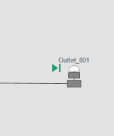

Module 11 — Historical Playback | Pages 639-642
Section 1 – Historical Playback
AVEVA™ Operations Management Interface 2023
Section 1 – Historical Playback
Introduction
Operations Management Interface provides the ability to play back data historized with Historian.
This could be useful for analyzing historical data for key performance indicators (KPIs) and
overview information through graphics.
System attributes specifically for the playback feature can be used with animations and scripts
within Industrial graphics to provide the functionality to play back historical data in a running
ViewApp. Examples are enabling playback mode and setting the start time and end time of the
historical data that can be displayed.
Before using the playback feature in a running ViewApp, you must create and deploy an instance
of the playback service from the System Platform IDE. Additionally, Historian must be started and
historized data points must be available.
to replay action commands.
Historical Playback Service
To use the historical playback feature, you must create and deploy an instance of the playback
service from the Configure Services dialog box in the System Platform IDE.
Note the following:
The name of the playback service is ASB.HistoricalDataReplayService.1.0.
Once the instance is created, you must name it to the name of the computer hosting
Historian Server for the Galaxy.
Historical Playback-Related System Attributes
Playback-related system attributes operate in the MyViewApp.Playback namespace. The names
of the playback attributes are specified with the prefix MyViewApp.Playback. For example, you
might use MyViewApp.Playback.attribute_name.
The playback-related attributes described below are predefined and available only for Operations
Management Interface ViewApps. Playback attributes are not supported in an InTouch application.
The following historical playback-related system attributes are provided as Read and Write, so that
they can be referenced by graphic elements with animations or scripts. You can create a symbol
using these attributes to provide the playback functionality for a ViewApp, such as enabling or
This section describes how to configure and start the historical playback service, and how to
implement historical playback in a ViewApp.
Module 11 – Historical Playback
AVEVA™ Training
disabling playback mode to switch between real time or historical data through the graphics,
playing or pausing the playback, and changing the playback speed.
Attribute
Data Type
Type
Description
Enabled
Boolean
Read/Write
When True, other attributes are initialized to their
default values and playback is enabled. When False,
playback is disabled.
HistorianServer
String
Read/Write
Node name of the computer hosting the Historian and
its historical data. This attribute is retentive, and the
initial value is an empty string. When the value is
empty, it is assumed that the Historian is on the GR
node.
The value of HistorianServer is used to discover the
replay service. The value must match with one of the
replay services defined in the Galaxy to enable
playback at runtime. If the Enabled attribute is True
(Playback is enabled), HistorianServer is read-only
and cannot be changed.
Playing
Boolean
Read/Write
When True, playback becomes active and Speed is
set to 1. When False, playback stops or pauses and
Speed is set to 0. The Enabled attribute must be True
to be able to set Playing to True.
Speed
Integer
Read/Write
Historical playback speed, where 0 represents
playback is stopped or paused, 1 represents normal
playback speed, and values greater than 1 are
functionally equivalent to fast forward.
StartTime
DateTime
Read/Write
Initialized to 8 hours prior to the current time when the
Enabled attribute is set to True. Setting StartTime
adjusts the starting time of the historical playback
range.
EndTime
DateTime
Read/Write
Initialized to the current time when the Enabled
attribute is True. Setting EndTime adjusts the ending
time of the historical playback range.
CurrentTime
DateTime
Read/Write
Initialized to the same time as StartTime when the
Enabled attribute is set to True.
Setting this attribute adjusts the current playback time.
Time assigned to CurrentTime can only be within the
historical playback period.
When Speed is set to 0 (paused), if both the EndTime
and CurrentTime attributes are set to the current
system time, then the client will receive a data update
based on that time.
Section 1 – Historical Playback
AVEVA™ Operations Management Interface 2023
Live Data Override Indicator
Starting with System Platform 2023, a Live Value Playback icon is built into Situational Awareness
Library symbols. During historical playback, the icon will appear on graphics that contain
references to non-historized attributes. It informs viewers that live values are substituted in the
display, because not all references used in the graphic can be resolved from historized sources.
The following example shows the Live Value Playback icon displayed on an outlet pump symbol
during historical playback.

Module 11 – Historical Playback
AVEVA™ Training
Review above.